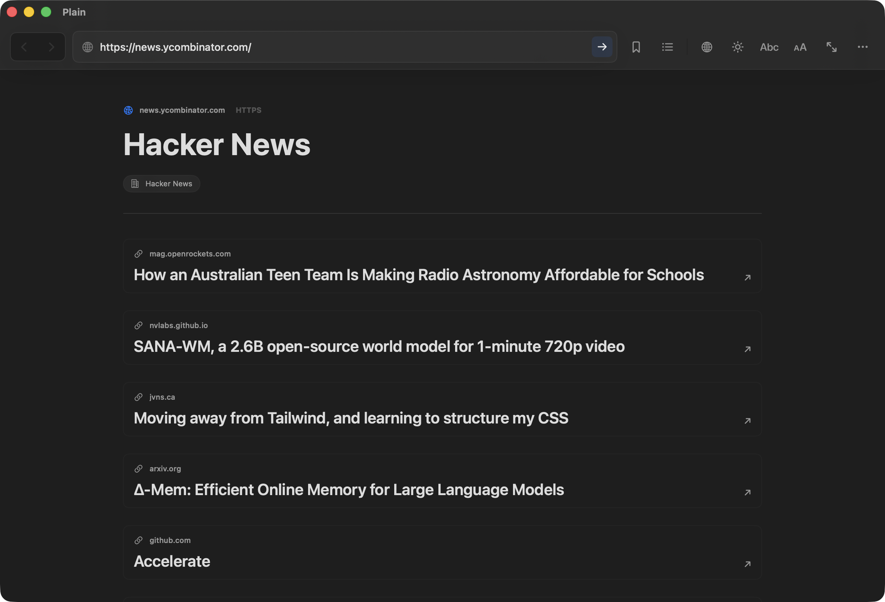

Pages, not little apps.
Once Plain has the readable page, there is no page script left alive in the background.
When you want the readable web, browse Plain.
Plain turns articles, docs, blogs, references, and chosen news sources into fast, readable pages: no ad-tech, no app shell, just the words, images, and links you came for.
Download Plain
Plain Browser is a native Swift app for macOS.
It is currently ad-hoc signed and not notarized.
You clicked, it loaded, you read, you followed the next link. Plain is built for that older rhythm: HTML as source material, the active app layer stripped away, the useful part rebuilt as a native macOS document.

Once Plain has the readable page, there is no page script left alive in the background.
Scripts, frames, embeds, trackers, and pop-up machinery are left outside the reading surface.
In measured runs against Chromium, Plain reached a native document sooner, fetched fewer bytes, and used less estimated energy.
Plain is for articles, docs, essays, recipes, references, blogs, and the next useful link. It is the wrong tool for banking, shopping carts, editors, social feeds, video apps, and JavaScript-only pages. Open those in your regular browser.
Plain News lets you choose RSS and web sources, pick a rolling or calendar window, add interests, and run a local reading pass. It uses Apple Foundation Models locally when available, with a local heuristic fallback, and opens selected stories in Plain's normal reader.
In the latest local 1.1.0 comparison against Chromium, Plain text-only reached a native document 60% sooner, fetched 78% fewer bytes, made one median request, and executed zero page-script bytes. With images enabled, Plain fetched 76% fewer bytes and reached a native document 61% sooner. The local arm64 1.1.0 DMG is 3.1 MB.
Benchmark evidence: 20 URLs, 3 iterations per URL, captured May 22, 2026. Resident-memory claims did not meet the marketing threshold in this run, and power claims were not refreshed for 1.1.0. Comparative local measurements, not a promise that every page is always faster.
No. Plain is intentionally narrow. Your regular browser remains the right tool for complex web apps.
Plain is not an ad blocker bolted onto a browser. It removes the scripts, frames, embeds, trackers, and pop-up machinery that many ads depend on, then builds the readable document from what remains.
Yes. Plain can fetch first-party images, or run in true text-only mode when images are off before loading.
If a page needs forms, dashboards, login flows, or a rich runtime, Plain can hand it off to your default browser.
Use Plain's Report Page Issue action, email hello@browseplain.com, or open a GitHub issue. The most useful reports include the page URL, what looked wrong, and a screenshot if possible.
No. There is no product telemetry, account system, sync service, remote AI call for page reading or Plain News, or analytics script.
Yes. Plain is a native Swift app with source available on GitHub.